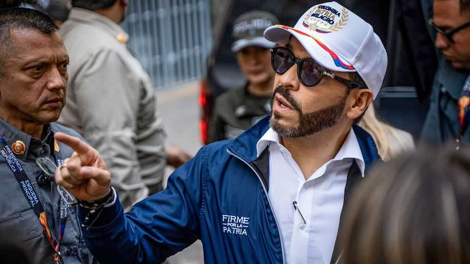
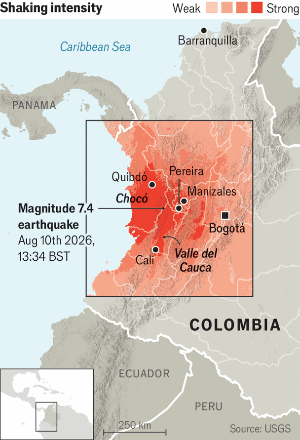

A big earthquake reveals two very different Colombias
The new president, Abelardo de la Espriella, took office three days before it struck

Aug 13th 2026
“They pulled people out alive,” says Alberto, an onlooker, as a digger’s steel teeth smash into a heap of concrete. It is all that remains of a four-storey building in Quibdó, a city in the western state of Chocó that was near the epicentre of a 7.4-magnitude earthquake which struck Colombia on August 10th. Aftershocks brought down more buildings. Around the country, at least 265 people have died.
The earthquake was as powerful as the deadly pair that devastated Venezuela in June. But it occurred about ten times deeper in the Earth’s crust, reducing its destructive force. Crucially, too, the Colombian government reacted much faster than the Venezuelan regime. Abelardo de la Espriella, sworn in as president only three days before the tremors, assumed command of the situation.

Yet the earthquake has still highlighted local deprivation. Chocó is Colombia’s poorest state. The hospital in Quibdó is the only place that offers even basic surgery. Bandits extort the poor population, 75% of whom are Afro-Colombian and 13% indigenous. Alberto complains about a lack of machinery: “The municipality is in bad shape,” he says. Rescue teams started work on the morning of the 11th, but the end of a 72-hour window after the quake, reckoned to be the period when lives can be saved, has passed. Of the three people pulled out of the rubble, two have died. The people of Chocó, Alberto says, have been “abandoned by the state”.
This contrasts with the rescue efforts in the richer neighbouring region of Valle del Cauca. In Cali, its capital, 88 people have been rescued, with expert teams sent from Bogotá, the country’s capital. Unlike in remote Chocó, it has been possible to bring aid overland to the hard-hit cities of Manizales and Pereira, where more than half of the deaths have been recorded so far (people in Chocó may have benefited from living in traditionally built wooden houses).
Mr de la Espriella seems aware of the disparities. His cabinet has been dispatched to the worst-affected areas. Speaking in Quibdó, he said that victims would receive temporary housing aid. Yet many families are wondering where that is. “We have no water, no energy, no nothing,” says Rosa Mercedes, staring at the ruin of her apartment in Quibdó. “No one has come to ask us what happened, to ask us how we are,” she says.
Colombia’s new president also faces the problem of how to pay for recovery from the quake. He has declared an economic emergency, letting him spend the national budget by decree, bypassing Congress. His new government has inherited a mess in the key agency for natural-disaster response. The National Unit for Disaster Risk Management is cash-strapped after being robbed by corrupt politicians and functionaries over the past few years. Some talk of the country’s population suffering as badly as it did in 1999 when an earthquake killed around 1,230 Colombians.
This earthquake has forced Mr de la Espriella to be more pragmatic than his campaign promises suggested he might be. He had previously vowed to shun Bogotá, home to what he calls the “same as always” elites. But his talk of running things instead from his home city of Barranquilla, on the other side of the country from where the quake struck, now looks even more unwise. It is in the capital where ministries, big media outlets or international partners can be accessed.
He is paying, too, for his foolish refusal to co-operate with the handover process initiated by the previous government. That was a “silly populist idea”, says Luis Ernesto Gómez, a former interior vice-minister. Badmouthing Gustavo Petro, his leftist predecessor, was popular on social media. The erratic Mr Petro himself was posting with—if anything—even more ferocity.
This means the new government lacks information and capabilities that it urgently needs. The executive is having to act mostly through local governments. That just about works in wealthier places like the parts of the country that grow coffee, and Valle del Cauca. In Quibdó, Ms Mercedes is still waiting. ■